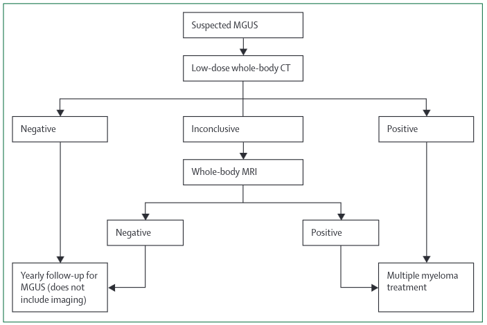
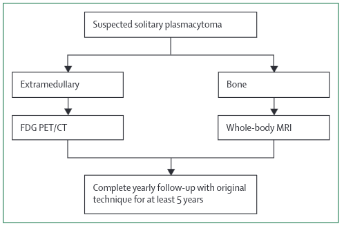
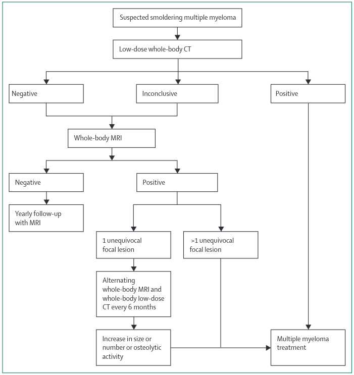
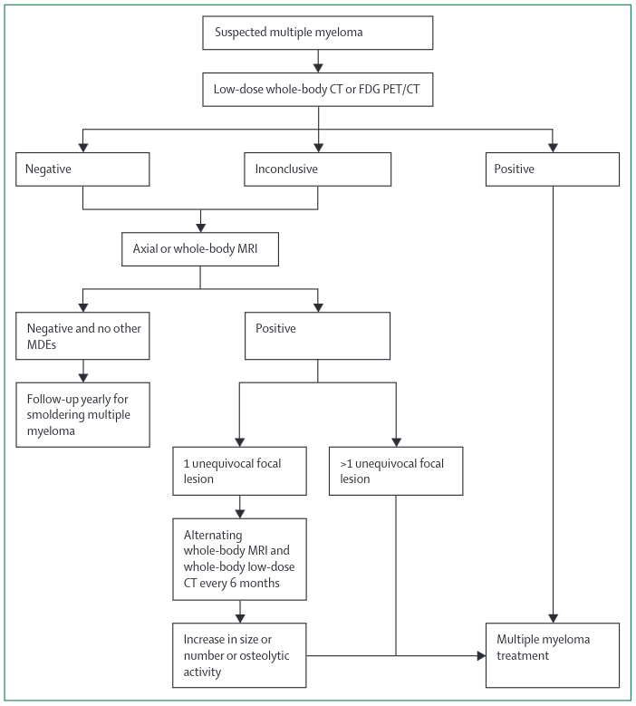
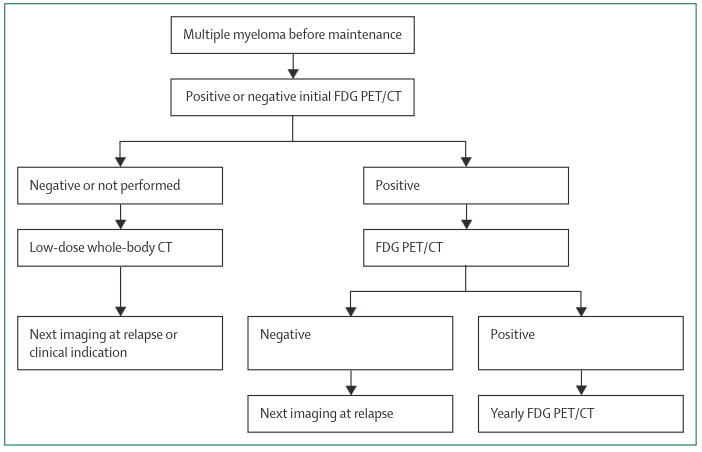
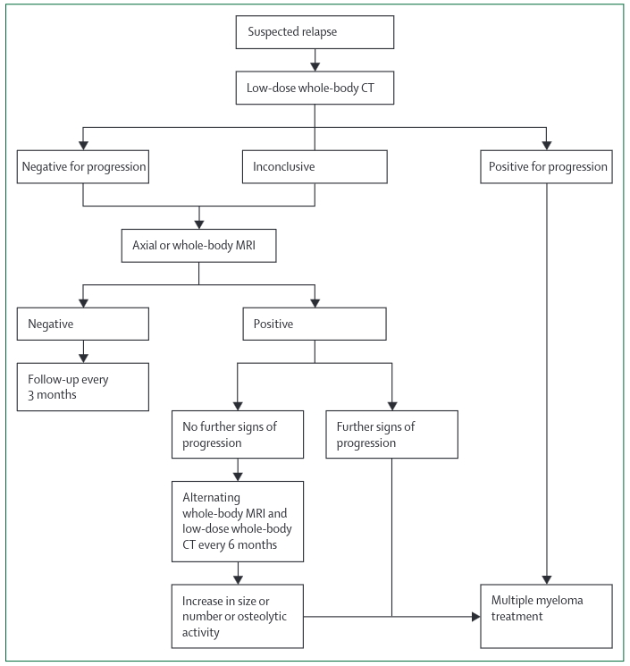

Myeloma
Background
Malignant plasma cells secrete M proteins (ie, monoclonal proteins, which are intact or incomplete immunoglobulin molecules that are electrophoretically and immunologically homogeneous) In most clonal plasma cell disorders, intact immunoglobulin molecules are secreted as M proteins In some patients, heavy chain expression is completely lost and only monoclonal free light chains (often called Bence Jones protein) are secreted 11
Myeloma is one of the plasma cell proliferative disorders, which are
Multiple Myeloma is defined as:
1. Clonal bone marrow plasma cells > 10% or Biopsy proven soft tissue or bony plasmacytoma.
AND
2. Original CRAB criteria or new MDEs / biomarkers.
CRAB Criteria ( signs of end organ damage attributable to myeloma )
- Hypercalcaemia (>2.75)
- Renal Insufficiency (eGFR < 40)
- Anaemia (<10g/dl)
- Bone Lesions. One or more lytic lesions on SS, CT or PET-CT. If <10% bone marrow cells then one lesion = solitary plasmacytoma with minimal bone marrow involvement. If 2 or more then it is MM.
New Diagnostic Criteria ( very highly predictive of progression to organ damage, before the organ damage )
- 60%+ Clonal Plasma Cells on bone marrow.
- Serum involved / uninvolved free light chain ratio of 100 or greater, provided the absolute level of the involved light chain is at least 100mg/L (a patient's involved free light chain either kappa or lambda is the one that is above the normal reference range; the uninvolved free light chain is the one that is typically in, or below, the normal range)
- More than one focal lesion on MRI that are > 5mm.
Smouldering Multiple Myeloma:
1. Serum monoclonal protein (IgG or IgA) ≥ 30g/L or urinary monoclonal protein ≥ 500mg per 24h and/or clonal bone marrow plasma cells 10-60%
AND
2. No myeloma defining events or amyloidosis.
Solitary Plasmacytoma:
1. Biopsy proven solitary lesion of bone or soft tissue with evidence of clonal plasma cells
AND
2. Normal bone marrow with no evidence of clonal plasma cells
AND
3. Absence of end-organ damage such as hypercalcemia, renal insufficiency, anemia, and bone lesions (CRAB) or amyloidosis that can be attributed to the plasma cell proliferative disorder. Including normal imaging (except for index lesion)
Solitary Plasmacytoma with minimal marrow involvement:
1. Biopsy proven solitary lesion of bone or soft tissue with evidence of clonal plasma cells
AND
2. Clonal bone marrow plasma cells < 10%.
AND
3. Absence of end-organ damage such as hypercalcemia, renal insufficiency, anemia, and bone lesions (CRAB) or amyloidosis that can be attributed to the plasma cell proliferative disorder. Including normal imaging (except for index lesion)
Non-IgM monoclonal gammopathy of undetermined significance (MGUS):
1. Serum monoclonal protein <30g/l
AND
2. Clonal Bone Marrow plasma cells <10%.
AND
3. Absence of end-organ damage such as hypercalcemia, renal insufficiency, anemia, and bone lesions (CRAB) or amyloidosis that can be attributed to the plasma cell proliferative disorder.
IgM MGUS
1. Serum IgM monoclonal protein <30g/l
AND
2. No evidence of anemia, constitutional symptoms, hyperviscosity, lymphadenopathy, hepatosplenomegaly, or other end-organ damage that can be attributed to the plasma cell proliferative disorder.
Light Chain MGUS
1. Abnormal FLC ratio (<0.26 or >1.65)
AND
2. Increased level of the appropriate free light chain (increased κ FLC in patients with ratio >1.65 and increased λ FLC in patients with ratio <0.26)
AND
3. No immunoglobulin heavy chain expression on immunofixation.
AND
4. Absence of end-organ damage such as hypercalcemia, renal insufficiency, anemia, and bone lesions (CRAB) or amyloidosis that can be attributed to the plasma cell proliferative disorder.
AND
5. Clonal bone marrow plasma cells <10%.
AND
6. Urinary monoclonal protein <500mg/24h.
POEMS
1. Polyneuropathy
AND
2. Monoclonal plasma cell proliferative disorder
AND
3. One or more of the Major criteria.
AND
4. One or more of the Minor criteria.
Major Criteria
- Sclerotic bone lesions
- Castleman's Disease
- Elevated VEGFA
Minor Criteria
- Organomegaly (splenomegaly, hepatomegaly, lymphadenopathy).
- Extravascular fluid overload (effusions, ascites, oedema).
- Endocrinopathy (adrenal, thyroid, pituitary, gonadal, parathyroid, pancreatic).
- Skin Changes.
- Papilloedema.
- Thrombocytosis / Polycythaemia.
Systemic AL Amyloidosis
1. Presence of an amyloid-related systemic syndrome (e.g., renal, liver, heart, gastrointestinal tract, or peripheral nerve involvement)
AND
2. Positive amyloid staining by Congo red in any tissue (e.g., fat aspirate, bone marrow, or organ biopsy).
AND
3. Evidence that amyloid is light-chain-related established by direct examination of the amyloid using mass spectrometry-based proteomic analysis or immunoeletronmicroscopy.
AND
4. Evidence of a monoclonal plasma cell proliferative disorder (serum monoclonal protein, abnormal free light chain ratio, or clonal plasma cells in the bone marrow)
Staging = Revised International Staging System (RISS)
| Stage | Criteria | Frequency | 5-year Survival |
|---|---|---|---|
| I | Serum albumin >3.5 Serum beta-2-microglobulin <3.5 No high-risk cytogenetics Normal LDH |
28% | 82% |
| II | Neither I or II | 62% | 62% |
| III | Serum beta-2-microglobulin >5.5 AND High-risk cytogenetics OR Raised LDH |
10% | 40% |
High-risk cytogenetics are t(4;14), t(14;16) or del(17p) = p53
Guidelines
International Myeloma Working Group Consensus Recommendations on Imaging in monoclonal plasma cell disorders 2019 1
Pathways
MGUS

MGUS is 5% of 70 yr old.
Risk Factors for Progression to MM ( Southeastern Minnesota Cohort ) in non-IgM paraproteinaemia.
IgM mostly develops into Waldenstroms so does not need imaging
- M-protein of >= 1.5g/dl
- Abnormal free light chain ratio.
20yr progression to MM risk is 7% with zero risks, 20% with one risk factor and 30% with two factors.
MRI in this group has approx 10% yield but no histo confirmation in studies thus false-positive risk.
Recommend CT first especially. MRI for equivocal CT or non-secretors. No follow up imaging unless symptoms or serological markers suggest MM.
Solitary Plasmacytoma

2:1 Solitary bone lesion : Solitary extramedullary plasmacytoma
But, risk of progression to MM is 35% for bone lesion and only 7% for soft tissue.
Aim of Imaging is the presence of another lesion including diffuse infiltration of the bone marrow.
Recommend WBMRI if single bone lesion - especially for diffuse infiltration - or PET-CT if a solitary plasmacytoma.
Repeat this yearly for 5ys as risk of progression is high in first 3 ys or so. After that do it based on clinical and biomarkers.
Smouldering Multiple Myeloma

Volume of active disease in SMM is lower then in MM.
Thus, aim of imaging is to spot signs that this is really MM. Thus need Sensitivity
Evidence base is from moderate sized studies showing 2 or more lesions on MR (not needing to prove bone lysis) predicts progression. Now, myeloma defining events.
So, about 20% of MRIs will show 2 or more lesions and they have a 75% rate of progression to symptomatic disease.
PET-CT can also be used with comparable results.
Risk of progression decreases with time - suggesting a 'benign' cohort - thus after 5ys stop routine imaging follow up.
Recommend WBCT is first line as there might be obvious disease. If that does not work then do WBMRI looking for the 2 lesions. If only one lesion then repeat yearly CT and MRI alternately looking for enlargement or increase in number. Otherwise do repeat MRI for 5 yrs.
NB: On PET-CT a positive lesion must be visible on the CT component. 10
Multiple Myeloma at Diagnosis

Some imaging features at diagnosis are prognostic for a bad outcome:
On Spinal MR = More than 7 focal lesions.
On PET/CT = More than 3 lytic lesions AND/OR extramedullary disease
BUT, neither of these changed the management
Recommend Doing WBCT first line to assess for lytic lesions and osteoporosis.
If negative, do a WBMRI only if there are no other MDEs (Myeloma Defining Events).

Now integrates information from imaging into concept of CR or minimal residual disease-negative status.
Post treatment lesions on PET-CT, MRI Spine and WBMRI have negative prognostics even with normalised other markers.
= Relapse at 44 months if positive vs 88 months if negative.
More imaging also shows that positive lesions and lytics lesions can go negative very slowly post-treatment. Thus, need to integrate all data, so a PET positive lesion should be correlated with the CT part to demonstrate active lysis or other.
Recommend Depending on the availability of baseline examinations and initial results, either whole-body CT to provide a baseline bone status for comparison against potential future relapse, or PET/CT as part of response assessment, should be done. For patients with residual lesions detected by PET/CT, yearly follow-up is recommended because these patients have a high risk of an early progression.
"Treatment response is difficult on MR as there is a range of possible responses." 10
Multiple Myeloma. Suspected Relapse

"Assessment of treatment response, monitoring during follow up and detection of disease relapse in myeloma patients is predominantly based on paraprotein and serum free light chain measurement. Imaging is important for reassessing bone disease at suspected relapse in patients with new bony symptoms and in assessing disease in patients with nonsecretory, oligosecretory or extramedullary disease" 3
Reporting Structure Recommendations.
First Diagnosis
A radiological report on whole body imaging in patients with mpcd should include:
- Infiltration and bone destruction pattern
- Minimal (normal appearing)
- Focal lesions
- Diffuse infiltration and bone destruction
- Mixed (focal lesions on diffuse background)
- Absolute number of focal lesions
- For WBMRI: 0, 1, 2-7 or >7
- For PET or WBCT: 0, 1-3 or >3
- Number of fractures
- New vs old
- Location
- Likelihood of malignant vs benign cause.
- Infiltration of long bones
- Evidence of surgical procedures in the skeletal system
- Incidental findings
In Remission
Differentiate these findings with regards to response to therapy in imaging (guidelinespapers for WBCT, WBMRI and PET/CT)
- Response
- Normalisation of bone marrow signal in previously affected areas.
- Decrease in number and size of focal lesions.
- Resolution of severely infiltrated bone marrow infiltrate into focal lesions.
- Decrease in number and size of soft tissue tumours (paramedullary and extramedullary)
- No change
- Progression
- Worsening of the diffuse bone marrow signal or new appearance of infiltration in previously unaffected areas.
- Increase in number and size of focal lesions.
- Merging of focal lesions into severely infiltrated bone marrow.
- Increase in the size or number of soft tissue tumours. (paramedullary and extramedullary)
Specifics for MRI
Cystic or liquid transformation of focal lesions after therapy.
NICE Guidelines 2016 4
1) Imaging for Suspected Myeloma
WB - MRI at First Diagnosis
Offer imaging to all people with a plasma cell disorder suspected to be myeloma.
Consider whole-body MRI as first-line imaging.
Consider whole-body low-dose CT as first-line imaging if wholebody MRI is unsuitable or the person declines it.
- Markov model assumes S/S of 1 / 0.95 despite the only study in the analysis which has full peformance data (which are the 2 largest) quoting figures of 0.63 / 0.72 for focal disease and 0.61 / 0.62 for diffuse disease. Why use such ridiculous figures plucked from nowhere?
"From the GC’s clinical experience and supported somewhat by low quality evidence MRI was assumed to be the most diagnostically accurate, in terms of both sensitivity and specificity." p71 of Full Guidance
- But guideline committe's experience of patients >70 is next to zero.
- Resource costs are non-representative
| Procedure | Cost |
|---|---|
| Skel Survey | £108 |
| WB-MRI | £203 |
| Spine MR | £199 |
| WB-CT | £147 |
| PET-CT | £605 |
-
The cost-effectiveness analysis does not entirely back up the conclusions as only if QUALY willingness to pay >£20K was WB MRI better than CT. And in the write up they state that the lack of decent economic and head to head diagnostic data makes it difficult to be sure which is better. But the write up states that MR is the preferred technique = why?
-
State that the cost-effectiveness is dependent on the reduction in follow up cross-sectional imaging = But we rarely used this!
For people with newly diagnosed myeloma or smouldering myeloma who have not had whole-body imaging with 1 of the following, consider whole-body imaging to assess for myeloma-related bone disease and extra-medullary plasmacytomas with one of:
MRI
CT
fluorodeoxyglucose positron emission tomography CT (FDG PET-CT).
2) Imaging later in Disease
Consider symptom-directed imaging for people with myeloma or smouldering myeloma if any new bone symptoms develop.
For people with myeloma and serological relapse or disease progression, consider one of the following (taking into consideration previous imaging tests):
whole-body MRI
spinal MRI
fluorodeoxyglucose positron emission tomography CT (FDG PET-CT).For people with smouldering myeloma and disease progression, consider one of the following (taking into consideration previous imaging tests):
whole-body MRI
whole-body low-dose CT
whole-body CT
spinal MRI
fluorodeoxyglucose positron emission tomography CT (FDG PET-CT).
But p268 states
"no studies were identified that investigated follow-up protocols for patients with myeloma so no evidence was found on any of these outcomes." 4
The write-up points out the paucity of data here then discusses that SS are no good really but then comes up with the above recommendations which is odd as in the same secton they quote the papers they use in a table and in it:
- 3 x studies of WB-MRI in relapse / PD, each with n=30 patients
- 1 x study of WB CT in detecting relapse / PD with n=439
- CT S/S = 0.995 / 0.96 whilst WB-MRI = 0.82 / 0.62
- No mention of what it is trying to do, given the definition of PD/relapse is mostly non-imaging.
"Whilst there were potential cost implications of making recommendations in this area, other questions in the guideline were agreed as higher priorities for economic evaluation."
BJH Guidelines on Imaging in Myeloma
Clinical
What does Diffusion Weighted whole body imaging do in Myeloma?
- Diagnose Myeloma.
- Stage Myeloma.
- Prognosticate Myeloma.
- Assess need for treatment (similar to above) = 'Activity assessment'
- Assess disease response.
- Assess need for treatment in chronic patient.
- Define which treatment. Chemotherapeutically.
- Define which treatment. Local treatments.
For each of the above one would have to demonstrate that MR is BETTER than standard techniques and that the additional resource is beneficial. This would include CT scan as this is cheaper and more likely to be
Radiological
ADC Values 2
Not yet part of the standard. But,
Normal bone marrow usually BELOW 600-700 um2/sec.
Viable tumour usually ABOVE 700 um2/sec UPTO 1400.
-
Hillengass J et al. IMWG consensus recommendation on imaging in monoclonal... Lancet Oncol 2019; 20: e302–12 ↩
-
Messiou C et al, Guidelines for Acquisition, Interpretation and Reporting of Whole-Body MRI in Myeloma. MY-RADS Radiology 2019; 291:5–13 • https://doi.org/10.1148/radiol.2019181949 • ↩
-
(https://onlinelibrary.wiley.com/doi/pdfdirect/10.1111/bjh.14827) ↩
-
NICE Guidelines on the Management of Myeloma. https://www.nice.org.uk/guidance/ng35/evidence/full-guideline-pdf-2306487277 ↩↩
-
Laubach J. Initial therapy in older patients with multiple myeloma. N Engl J Med. 2019;380(22):2172-2173. https://search.proquest.com/docview/2232193627?accountid=46767. doi: http://dx.doi.org/10.1056/NEJMe1904372. ↩
-
Lai AYT, Riddell A, Barwick T, et al. Interobserver agreement of whole-body magnetic resonance imaging is superior to whole-body computed tomography for assessing disease burden in patients with multiple myeloma. Eur Radiol. 2020;30(1):320-327. doi:10.1007/s00330-019-06281-x ↩
-
Cost-Effectiveness Analysis https://www.nice.org.uk/guidance/ng35/evidence/appendices-af-pdf-2306487278 ↩
-
Goldschmidt N, Zamir L, Poperno A, Kahan NR, Paltiel O. Presenting Signs of Multiple Myeloma and the Effect of Diagnostic Delay on the Prognosis. J Am Board Fam Med. 2016;29(6):702-709. doi:10.3122/jabfm.2016.06.150393 ↩
-
Friese C et al Leuk Lymphoma. 2009 March ; 50(3): 392–400. doi:10.1080/10428190902741471. ↩
-
Vinnicombe S & Sahdev A. Husband & Reznek's Imaging in Oncology 4e. ↩↩
-
Multiple Myeloma. Elsevier Point of Care. 2022. ↩